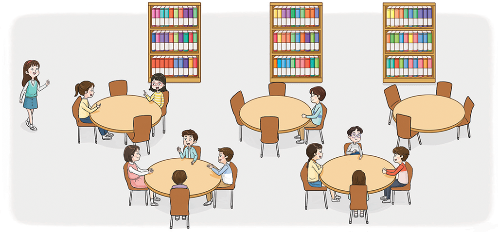

- 1~3
- 1
- 2
- 3
- 4
- 5
- 6
-
1~3 주변에서 대응 관계를 찾아 식으로 나타내어 보세요.
 -
1 그림에서 대응하는 관계를 찾아보세요.
서로 대응하는 두 양 대응 관계 ① 책꽂이의 수 책꽂이
칸의 수책꽂이의 수를 3배 한만큼 책꽂이 칸의 수가 있습니다.② 책의 수책꽂이
칸의 수책꽂이 칸의 수를 10배 한 만큼 책이 있습니다. ③ 의자의 수탁자의 수 의자의 수를 4로 나눈 만큼 탁자의 수가 있습니다. -
2 위에서 찾은 대응 관계를 식으로 나타내어 보세요.
① 책꽂이의 수를 ♡, 을/를 □라고 하면 대응 관계는책꽂이 칸의 수입니다.♡×3＝□② 를 □, 책꽂이 칸의 수를 ◎라고 하면 대응 관계는책의 수입니다.◎×10＝□③ 의자의 수를 △, 탁자의 수를 ○라고 하면 대응 관계는 △÷4＝○입니다. -
3 왼쪽의 그림에서 탁자마다 의자가 1개씩 더 있을 때, 탁자의 수와 의자의 수 사이의 대응 관계를 식으로 나타내고, 그 이유를 설명해 보세요.
-
식○×5=△(탁자의 수: ○, 의자의 수: △)
-
이유○×5=△(탁자의 수: ○, 의자의 수: △)
-
-
4 지혜는 친구들과 칠판에 미술 작품을 자석으로 붙였습니다. 사용한 자석의 수와 미술 작품의 수 사이의 대응 관계를 표를 이용하여 알아보고 식으로 나타내어 보세요.
자석의 수(개) 10 37 15 9 6 …… 미술작품의 수(개) 9 2 6 1485 …… 예자석의 수를 ○, 미술 작품의 수를 □라고 하면 대응 관계는 □+1=○입니다. -
5 대응 관계를 나타낸 식을 보고, 식에 알맞은 상황을 만들어
보세요.△ + 3 = ◇예슬기가 가진 연필의 수(◇)는 준기가 가진 연필의 수(△)보다 3자루 많습니다.예형의 나이(◇)는 내 나이(△)보다 3살 많습니다. -
6 주변에서 서로 대응하는 두 양을 찾아 각각 기호로 나타내고, 대응 관계를 식으로 나타내어 보세요.
서로 대응하는 두 양 대응 관계를
나타낸 식사물함
전체의 수기호 사물함
줄의 수기호 △×7＝☆☆△책상의 수기호 의자의 수기호 ○＝□○□